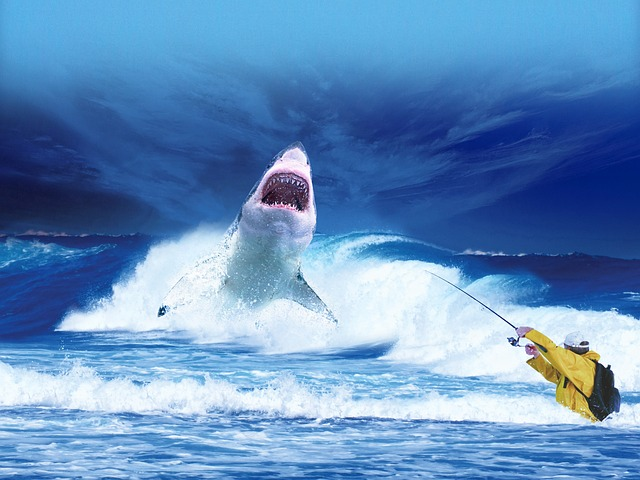

Цікаві Факти про Акул.
1. Скелет акул не має кісток, і складається з хрящових тканин.
2. В акул міцна плакоїдна луска, схожа за своїми властивостями на наждачний папір. Водночас вона робить тіло цих риб обтічним.
3. Акула може розвивати швидкість 8–19 км/год, а деякі види — до 50 км/год при ривку.
4. Акули існують вже понад 400 млн років.
5. Найменший розмір акули — 15см, найбільший — 12 метрів.
6. Для збереження енергії акула може відключати частину мозку.
7. Акула тримається на воді завдяки своїй великій печінці.
8. Нюх у акули є одним з кращих на планеті. Акула може відчути запах крові на відстані 300-400 метрів.
9. Для дихання акула повинна прокачувати воду через зябра. Робити це вона може як в русі, так і в стані сну.
10. Акули сплять, залишаючись при цьому у свідомості!
11. Найбільші спіймані акули досягали 12 метрів в довжину.
Перейти до наступної тварини